세컨드 브레인과 30분 브레인 덤프
AI 세컨드 브레인이라는 말은 거창하게 들리지만, 실체는 AI 도구가 읽고 쓰는 텍스트 파일 폴더 하나예요. 발표자의 폴더에는 전략, 팀, 지금까지 만든 유튜브 영상, 영업 리드 이력 같은 파일이 수천 개 들어 있어요. AI가 일할 때마다 여기서 나와 회사에 관한 맥락을 꺼내 쓰니까, 누구에게나 할 법한 답 대신 회사 사정에 맞는 결과가 나와요.
아래 화면이 이 영상의 기본 그림이에요. 가운데 second-brain/ 폴더 하나를 왼쪽의 Claude, ChatGPT, Gemini가 함께 쓰고, 오른쪽 팀원 세 명도 같은 폴더에 연결돼 있어요.
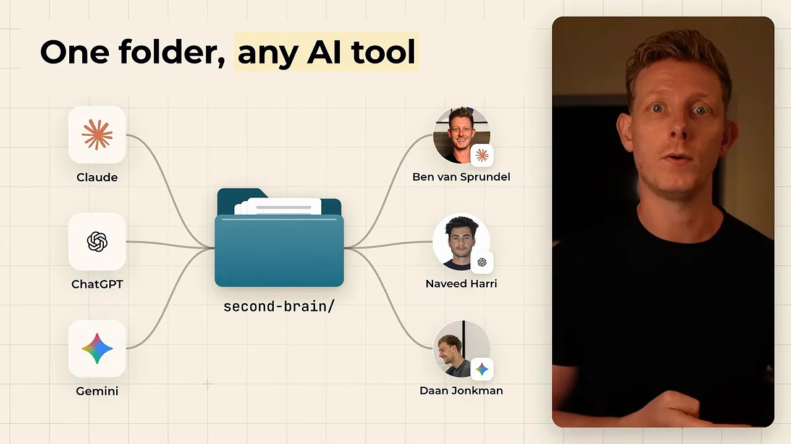
옵시디언 같은 앱으로 이 폴더를 열면 파일 사이 연결이 그물 같은 그래프로 보여요. 그래서 '두 번째 뇌'라는 이름이 붙었어요.
팁 18개는 세 단계로 나뉘어요
영상은 화면 아래에 진행 막대를 띄워 두고 팁을 세 묶음으로 나눠요. 1~7은 누구나 30분이면 하는 세팅, 8~13은 쓰면서 낡지 않게 하는 유지, 14~18은 팀 전체로 넓히는 확장이에요. 막대에는 번호만 있어서, 이 문서에서 다루는 팁 이름을 붙여 다시 그렸어요.
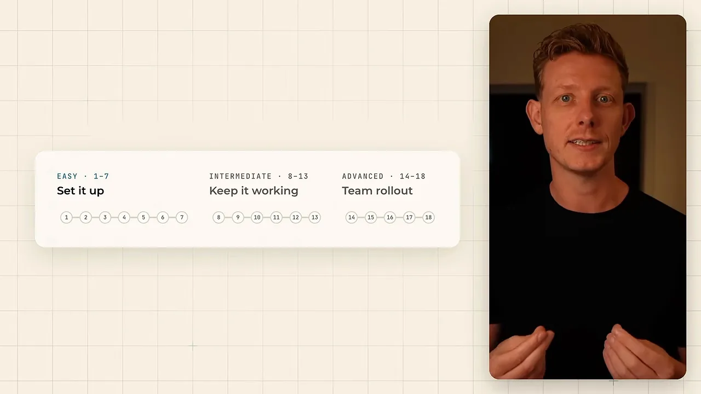
팁 1. 30분 브레인 덤프로 시작해요
수천 개 파일과 화려한 그래프를 보면 몇 주는 걸릴 것 같지만, 발표자 말로는 가치의 80%가 파일 5~10개에서 나와요. 전략 문서, 이상적인 고객 프로필, 브랜드 말투, 오퍼 문서처럼 거의 모든 작업에 쓰이는 파일이에요. 아래 슬라이드도 같은 말을 해요. 폴더 하나에 파일 7개, 가치 80%, 브레인 덤프 25분이에요.
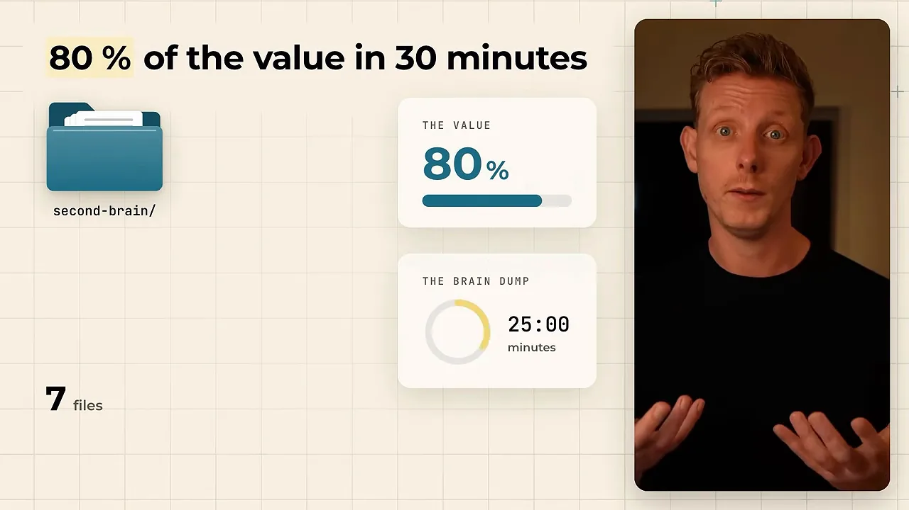
방법은 단순해요. Wispr Flow 같은 음성 받아쓰기 도구를 켜고, 나는 누구인지, 회사는 무엇을 하는지, 고객은 누구인지, 목표와 전략, 글 쓰는 방식, 팀 구성을 두서없이 말해요. 정리는 Claude가 맡아요. 발표자는 질문을 하나씩 던지고 파일까지 만들어 주는 세팅 스킬을 만들어 무료로 나눠요. 아래는 그 스킬이 끝난 뒤 화면이에요. 오른쪽 Outputs에 strategy.md, icp.md, brand-voice.md, offer.md, team.md 다섯 파일이 생겼어요.
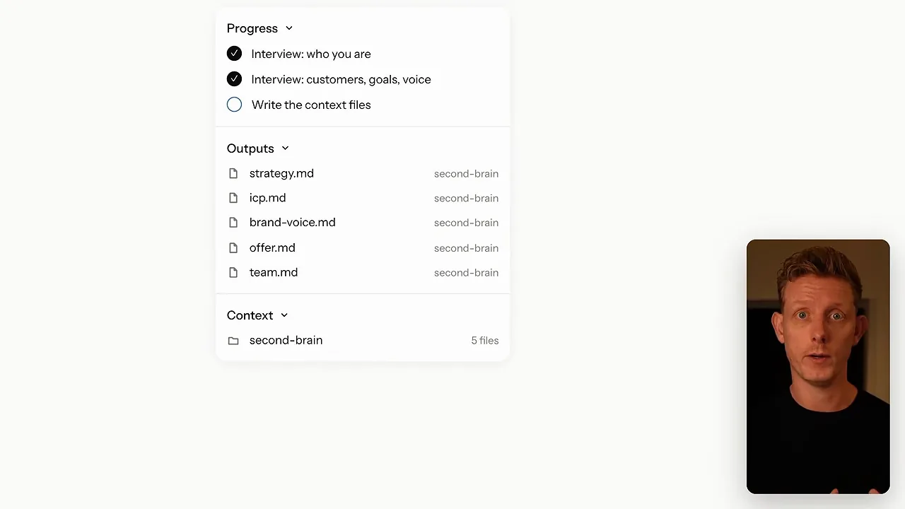
그다음부터는 새 대화를 시작할 때마다 이 폴더를 고르기만 하면 돼요. AI는 폴더에서 맥락을 읽고, 대화 중에 나온 새 정보는 다시 폴더에 저장해요. 그래서 쓸수록 세컨드 브레인이 저절로 자라요.
로컬 폴더에 두고, 눈으로 보이게
팁 2. 노션이 아니라 로컬 폴더에 둬요
첫 팁 다음에 가장 많이 받는 질문은 세 가지예요. 노션에 두면 안 되는지, 구글 드라이브에 두면 안 되는지, Claude에 이미 메모리 기능이 있지 않은지예요. 먼저 내장 메모리는 아래 화면처럼 '몇 가지 사실'만 기억해요. 게다가 자물쇠가 걸린 Claude만 그 기억을 쓰고, ChatGPT와 Gemini는 읽지 못해요.
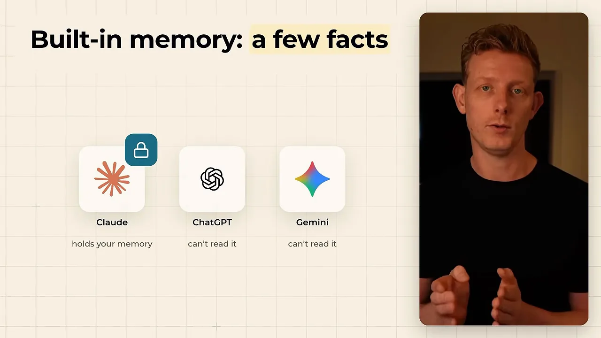
노션이나 드라이브도 되긴 해요. 문제는 Claude가 커넥터를 거쳐야 한다는 점이에요. 아래는 'Acme 통화 준비해 줘'라고 했을 때 화면이에요. 노션에서 23건, 드라이브에서 41건을 검색하고, 그중 하나는 낡은 2024년 전략 문서(outdated 표시)예요. 47초가 지나도 아직 커넥터를 읽고 있어요.
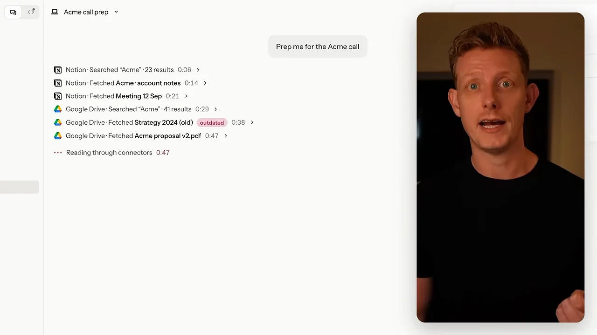
로컬 세컨드 브레인이라면 그 고객의 하위 폴더 하나만 열면 끝나요. 발표자는 여러 방식을 다 써 봤지만 로컬 폴더가 토큰은 덜 쓰고 더 관련 있는 맥락을 가져온다고 해요. 파일이 내 컴퓨터에 있으니 내 소유이고, Claude든 ChatGPT든 같은 폴더를 쓸 수 있다는 점도 커요. 그래서 권하는 건 폴더 하나를 맥락의 중심으로 삼고, 어떤 AI 도구든 새 대화마다 그 폴더를 고르는 거예요.
팁 3. 눈으로 보이게 해요
Claude는 모든 걸 마크다운 파일로 저장해요. 파일이 늘면 사람이 읽고, 확인하고, 찾기가 어려워져요. 옵시디언은 폴더를 열어 파일 사이 연결을 그래프로 보여 주는 무료 앱이에요. 옵시디언을 써도 AI 쪽에서는 달라지는 게 없어요. Claude는 여전히 폴더를 직접 읽어요. 바뀌는 건 사람이 내용을 읽고 관리하고 고치기 쉬워진다는 점이에요. 앱은 같은 폴더 위에 얹은 '보기 층'일 뿐이라 여러 앱을 함께 써도 돼요.
지도와 인덱스로 길을 찾게 하기
팁 4. agents.md는 설명서가 아니라 지도예요
파일과 폴더가 늘면 Claude는 어디에 무엇이 있는지부터 알아야 해요. 아래 슬라이드처럼 폴더 일곱 개가 있는데 Claude 아래에 No AGENTS.md라고 붙어 있으면, Claude는 전부 뒤질 수밖에 없어요. 토큰을 낭비하고 엉뚱한 맥락을 가져오기 쉬워요.
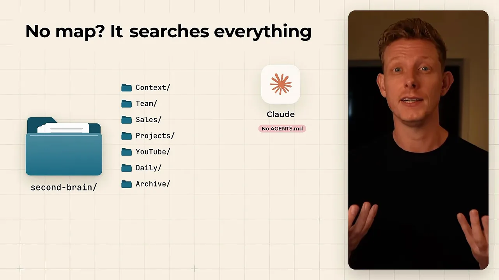
agents.md는 폴더 맨 위에 두는 파일 하나로, Claude가 매 대화 처음에 읽어요. 아래는 '노스윈드와의 영업 통화를 준비해 줘'라고 했을 때예요. 먼저 AGENTS.md의 라우팅 테이블을 읽고, 표에서 고른 Sales/clients/northwind.md와 Context/offer.md 두 파일만 열어요. 각 단계에 걸린 시간이 1초 안팎이에요.
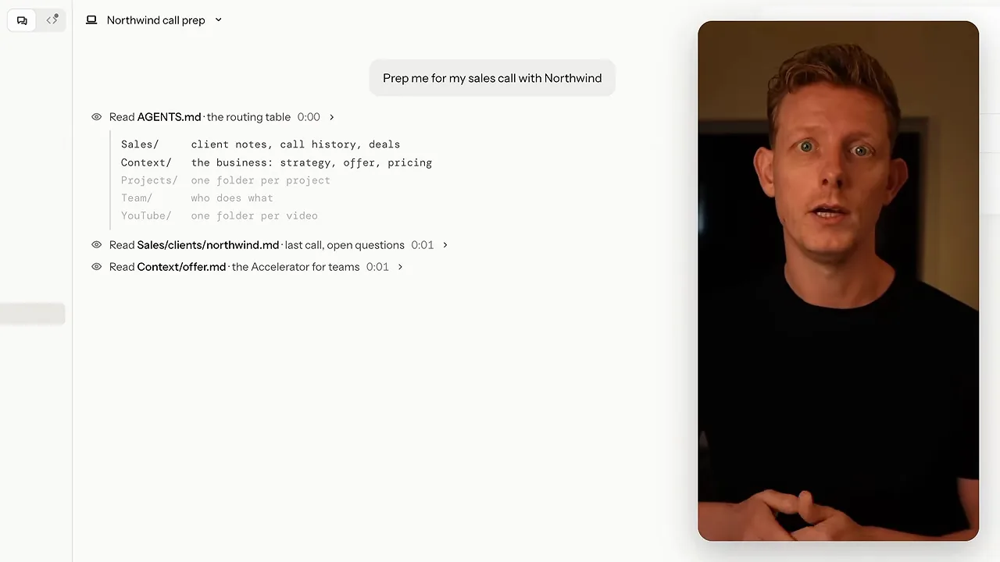
claude.md라는 이름이 익숙할 텐데, 영상은 같은 문서라고 봐요. 다만 Claude뿐 아니라 다른 AI 도구에서도 통하도록 agents.md라고 부르는 게 요즘 관례라고 해요. 발표자는 Anthropic 문서에서 이 파일이 매 세션 처음 읽힌다는 문장을 짚어 보여 줘요. 노란 표시 오른쪽에 'AGENTS.md를 쓴다면 이쪽을 보라'는 안내도 함께 보여요.
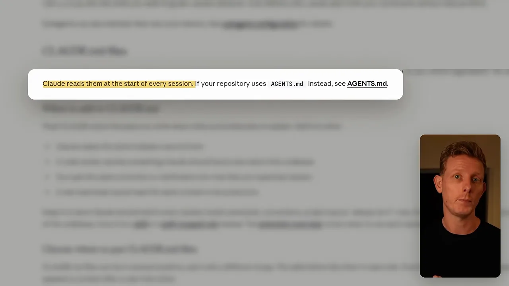
잘 쓴 agents.md의 핵심은 라우팅 테이블이에요. 폴더마다 무엇이 들어 있는지, Claude가 언제 써야 하는지, 새 내용을 어디 저장할지를 적은 짧은 목록이에요. 아래 슬라이드 왼쪽이 그 지도이고, 오른쪽 348쪽짜리 'Business manual'에는 Not in AGENTS.md라는 빨간 표시가 붙어 있어요. 회사 정보 자체는 넣지 말고 어디 있는지만 알려 주라는 뜻이에요.
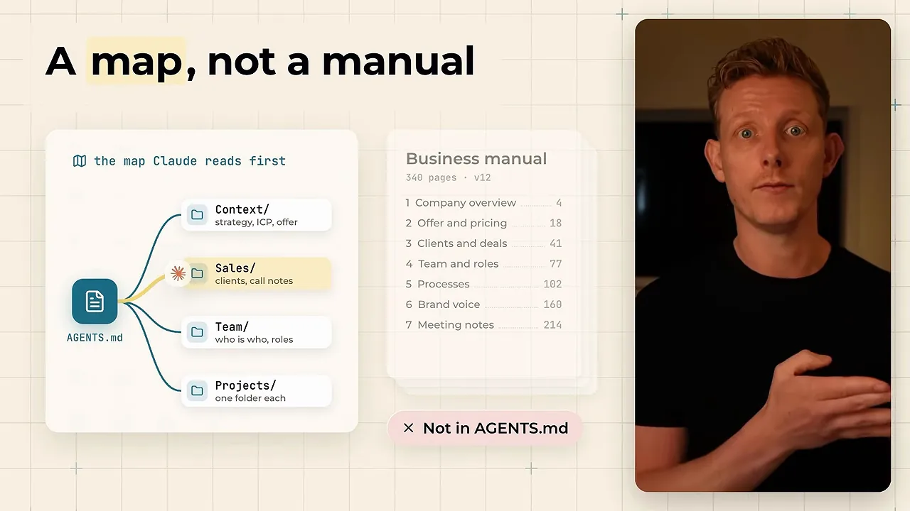
둘째 원칙은 짧게 유지하는 거예요. 발표자는 Anthropic이 200줄 아래를 권한다고 전해요. 직접 쓸 필요는 없어요. 팁 1의 세팅 스킬이 이 원칙대로 써 주고, 폴더를 고른 뒤 'Write me an AGENTS.md based on what's in this folder'라고 부탁해도 돼요. 이미 claude.md가 있다면 이름을 agents.md로 바꾸고, 둘을 같이 두지 말라고 해요. claude.md가 있으면 Claude가 그것만 읽고 agents.md는 건너뛰기 때문이에요.
팁 5. 폴더는 하나만 써요
프로젝트, 부서, 고객, 사업마다 폴더를 따로 둬야 하냐는 질문에 발표자의 답은 '아니요'예요. 폴더가 여럿이면 관리할 것도, 새 대화마다 고를 것도 늘어요. agents.md가 원래 할 일이 맞는 맥락으로 길을 안내하는 거라서, 필요한 건 여러 개의 뇌가 아니라 좋은 지도가 있는 뇌 하나예요. 아래 슬라이드에서 왼쪽의 제안서, 영업 통화, 영상 대본 요청이 모두 같은 폴더의 AGENTS.md를 거쳐 오른쪽 Context/, Sales/, YouTube/로 갈라져요.
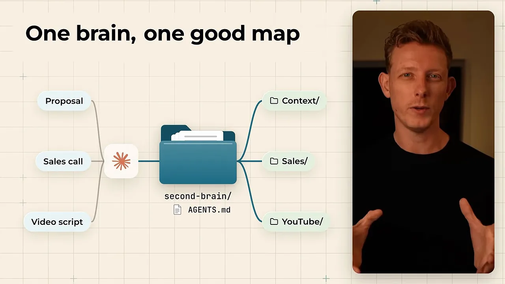
발표자도 여러 사업을 한 폴더에서 운영해요. 사업, 고객, 부서는 그 안의 하위 폴더일 뿐이에요. 아래가 실제 agents.md예요. 'Knowledge Routing' 표의 열이 Folder, What's in it, When, Save here 네 개이고, 예를 들어 Context/는 전략·ICP(Ideal Customer Profile)·브랜드가 들어 있고 기획할 때 쓰며 결정을 저장하는 곳이에요.
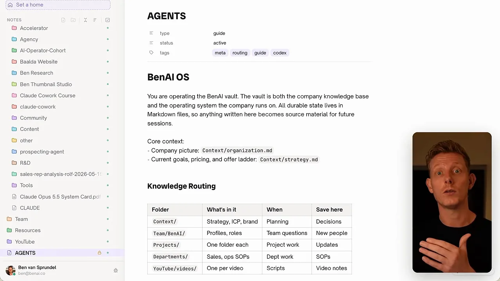
예외는 두 가지예요. 맥락이 전혀 겹치지 않는 별개의 사업 둘을 운영하거나, 개인 프로젝트와 업무를 나누고 싶을 때예요.
팁 6. 폴더 구조를 고정해요
폴더 구조를 너무 오래 고민하거나 자꾸 바꾸는 경우가 많아요. 하위 폴더 구조는 Claude가 어디 저장하고 어디서 찾을지 알기 위한 것이라 이름 자체는 그리 중요하지 않아요. 중요한 건 바꾸지 않는 거예요. 옮기거나 추가할 때마다 Claude는 다시 배워야 하고 agents.md도 고쳐야 해요. 아래 화면이 그 사고예요. 고객 온보딩 체크리스트에 사람을 추가하라고 했는데 Onboarding/ 폴더를 못 찾아요. 알고 보니 Team/Onboarding/으로 옮겨졌고 Campaigns/는 Marketing/이 돼 있어서, agents.md의 경로 세 개를 고쳐야 했어요.
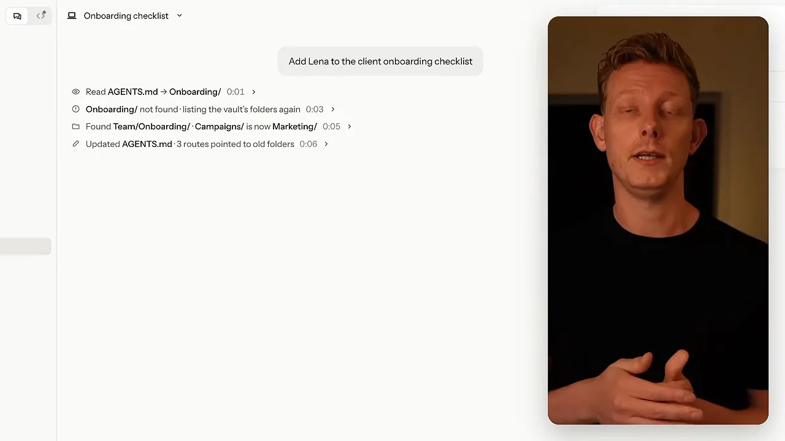
그래서 발표자는 '고정된 구조가 구조 그 자체보다 중요하다'고 해요. 어디서 시작할지 모르겠다면 팁 1의 세팅 스킬이 대부분에게 맞는 구조를 만들어 줘요.
팁 7. 하위 폴더마다 인덱스 파일을 둬요
쓰다 보면 하위 폴더마다 파일이 수십, 수백 개로 늘어요. 그러면 agents.md만으로는 부족해요. Claude가 어느 하위 폴더로 갈지는 알지만, 그 안의 어느 파일을 열지는 모르거든요. 그래서 하위 폴더 안에도 무엇이 있는지 적은 작은 지도를 둬요. 두 단계 지도를 그리면 이래요.
이 방식은 안드레이 카파시가 자기 AI 지식 베이스에 쓰는 방식이에요. 발표자는 그의 말을 이렇게 옮겨요.
The LLM reads the index first to find relevant pages, and then drills into them.
LLM은 먼저 인덱스를 읽어 관련 페이지를 찾고, 그다음 그 페이지로 파고들어요.
— 영상 10:57
아래는 발표자의 Projects/ 폴더 인덱스예요. Categories 표에 Agency, Community, Content 같은 범주마다 무엇이 들어 있는지와 그 범주의 인덱스 파일 경로(Agency/CLAUDE 등)가 적혀 있어요. 인덱스 안에 또 인덱스가 걸린 구조예요.
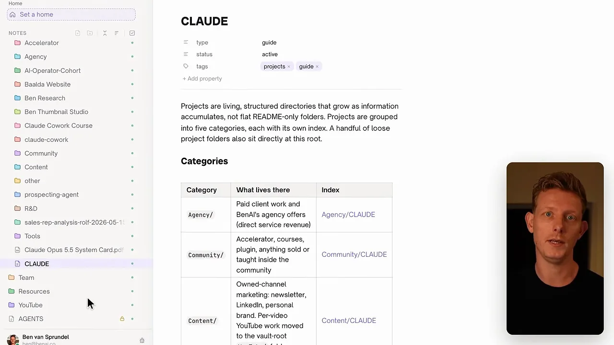
세팅 스킬이 인덱스 파일을 자동으로 만들지만, 폴더가 자라면 인덱스도 고쳐야 해요. 그 자동화는 유지 단계에서 다뤄요. 영상은 여기까지 일곱 개만 해도 대부분보다 앞서지만, 세컨드 브레인은 세팅이 아니라 몇 주 뒤에 무너진다고 말하며 다음 단계로 넘어가요.
낡지 않게 지키는 법
팁 8. 원본 데이터가 아니라 인사이트를 저장해요
흔한 실수는 세컨드 브레인을 원본 데이터를 쏟아붓는 곳으로 쓰는 거예요. 목표는 모든 걸 저장하는 게 아니에요. 원본 데이터 위에 거른 층을 두고, 사람과 AI가 바로 쓸 수 있게 쪼갠 인사이트만 담아요. 소프트웨어, 엑셀 시트, DB(Database)의 원본 대신 거기서 나온 요점을 저장하는 거예요.
발표자는 이 영상을 만들면서 직접 해 봤어요. 지원 통화, 커뮤니티 질문, 지원 티켓 수백 건을 AI로 훑어 흔한 실수와 팁을 뽑았고, 아래 파일 하나로 남겼어요. 위쪽 sources 칸에 support calls, community questions가 출처로 붙어 있고, 본문에는 Top mistakes와 Top tips가 다섯 줄씩 있어요.
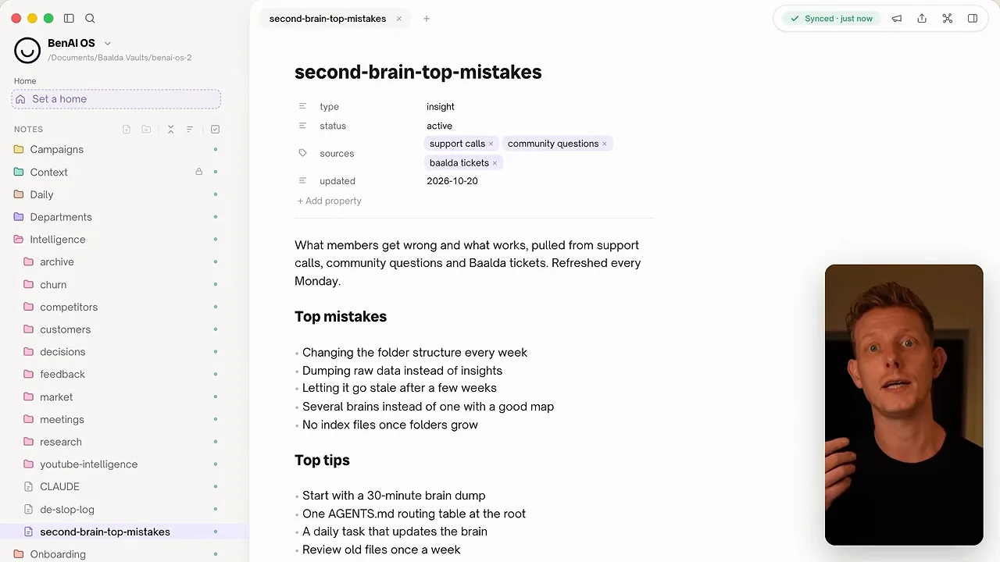
여러 출처를 한데 모아 둔 덕분에 어느 한 데이터 소스만으로는 못 얻는 인사이트도 생겨요. 그리고 세컨드 브레인에는 소프트웨어에 없는 맥락도 담아요. 전략, 결정, 선호, 지난 분기에 가격을 올린 이유, 실패한 출시에서 배운 것 같은 거예요. 이런 건 CRM(Customer Relationship Management)이나 프로젝트 관리 도구에 없고, 사람 머릿속이나 회의, AI와의 대화에만 있어요.
아래 슬라이드가 둘의 관계를 정리해요. 아래 칸이 HubSpot, Gmail, 슬랙 같은 커넥터와 원본 데이터이고, 그 위에 'Second brain · insights' 층이 얹혀 있어요. 오른쪽 위 Not a replacement 표시가 요점이에요.
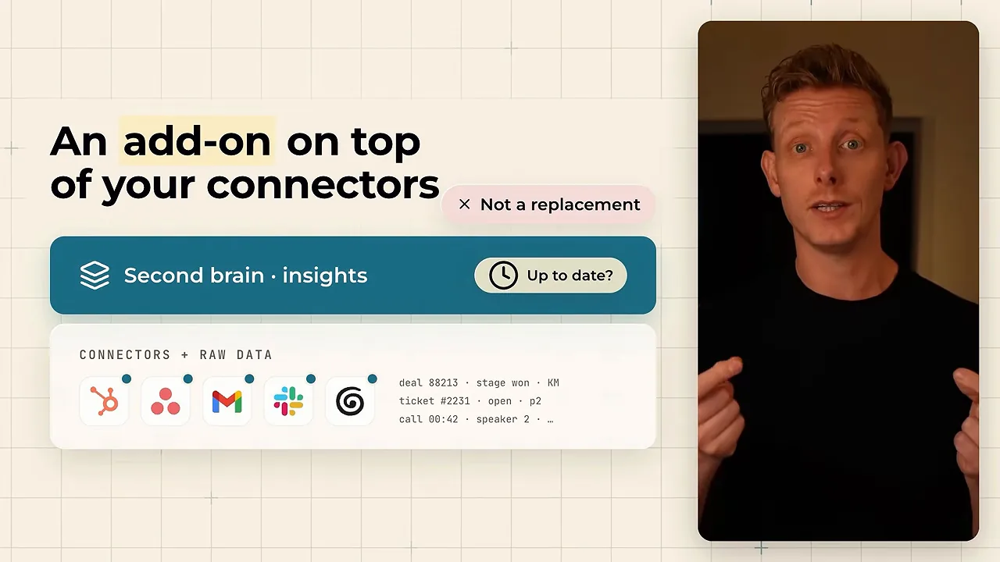
팁 9. 매일 업데이트해요
손으로만 업데이트하거나 아예 안 하면 세컨드 브레인은 금방 낡아요. 새 대화마다 그사이 일어난 일을 붙여 넣어야 한다면 세컨드 브레인을 둔 의미가 없어요. 그래서 중요한 커넥터와 데이터 소스를 돌면서 새 내용을 가져오고, 인사이트만 저장하는 예약 작업을 매일 돌려요. 아래가 Claude의 'Create scheduled task' 창이에요. 이름 칸에 'Daily second brain u…'를 입력하는 중이고, 아래에 작업할 폴더, 실행 주기, 권한을 고르는 칸이 있어요.
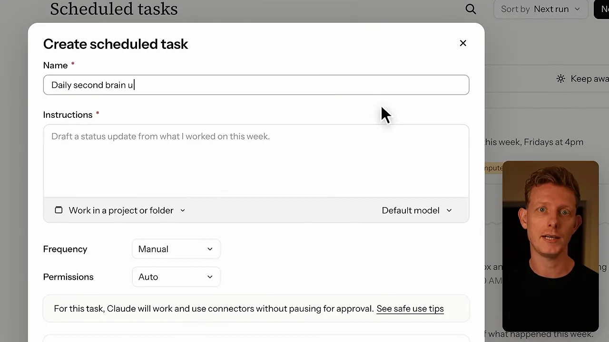
가장 값진 출처는 회의 녹취 도구예요. 많은 결정이 회의에서 나오고, 그 맥락은 다른 어디에도 기록되지 않거든요. 여기에 CRM, 프로젝트 관리 도구, 메일, 슬랙처럼 자기에게 맞는 도구를 더해요. 발표자의 운영자 스킬은 몇 가지 질문으로 커넥터를 고르고 이 예약 작업을 세팅해 줘요. 또 새 내용 때문에 바뀐 옛 파일을 찾아 고치거나 지워서, 낡은 맥락이 쌓이지 않게 해요.
팁 10. 매주 청소해요
파일이 수백, 수천 개가 되면 옛 파일 몇 개를 고치는 걸로는 부족해요. 두 가지 일이 생기거든요. 첫째, 매일 파일과 폴더가 늘면서 agents.md와 인덱스가 실제 내용과 어긋나요. 아래 슬라이드의 agents.md에는 Campaigns/와 Old pricing/처럼 이미 없어졌거나 낡은 경로가 남아 있어요. 둘째, 중복 파일, 서로 모순되는 노트, 아무도 링크하지 않는 파일이 쌓여 부풀어요.
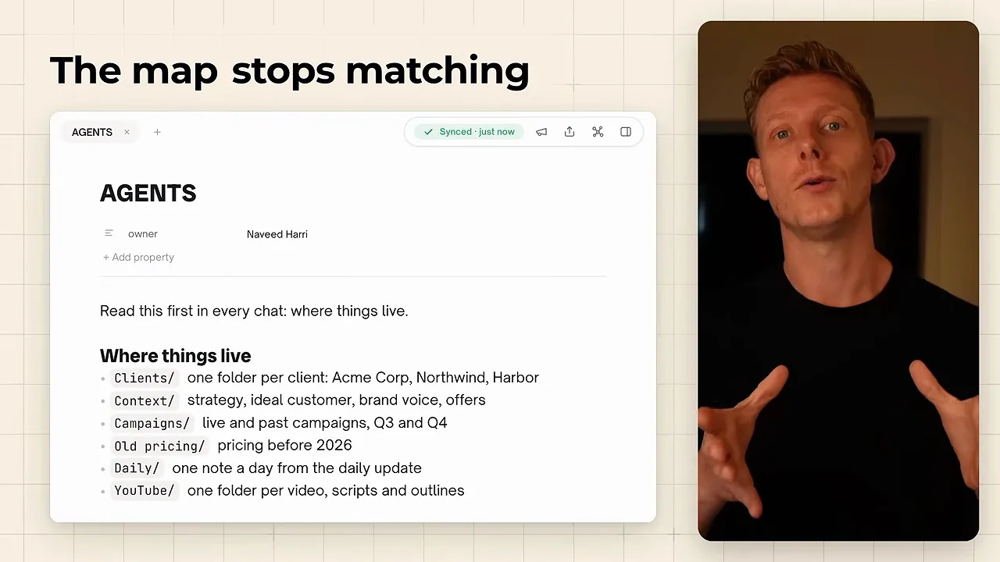
그래서 1~2주마다 건강 검진을 해요. 발표자는 Anthropic, 카파시 등의 방법을 묶어 최적화 스킬을 만들었어요. 하는 일은 세 묶음이에요.
| 묶음 | 하는 일 |
|---|---|
| 지도 고치기 | 모든 폴더가 agents.md에 올라 있는지, 큰 폴더에 인덱스가 있는지, 라우팅이 여전히 맞는 곳을 가리키는지 확인하고 agents.md를 200줄 아래로 유지해요 |
| 노트와 링크 정리 | 깨진 링크를 고치고 중복, 고아 노트(아무도 가리키지 않는 노트), 서로 모순되는 노트를 정리해요 (카파시에게서 온 부분) |
| 가볍게 유지 | 너무 긴 파일을 줄이고, 이유 없이 토큰만 쓰는 부분을 잘라내고, 불분명한 파일 이름과 빠진 라벨을 정리해요 |
아래는 스킬을 실제로 돌린 화면이에요. agents.md와 인덱스 파일 14개를 읽고, 링크 1,204개를 검사해 깨진 14개를 고치고, 중복 노트 8개를 합쳤어요.
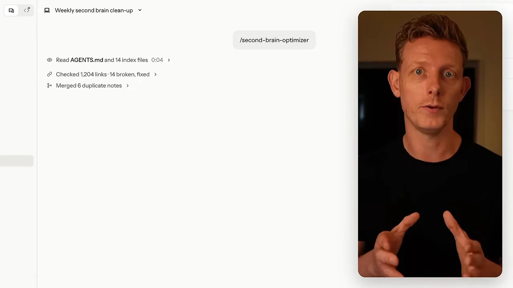
매일 업데이트와 마찬가지로 이것도 예약 작업으로 걸어 1~2주마다 자동으로 돌리라고 권해요.
대시보드와 스킬로 꺼내 쓰기
팁 11. 세컨드 브레인 위에 대시보드를 만들어요
이쯤 되면 세컨드 브레인에는 AI뿐 아니라 사람에게도 값진 정보가 쌓여 있어요. 그런데 마크다운 파일 더미에서 사람이 직접 인사이트를 뽑기는 어려워요. 그래서 그 위에 대시보드를 올려요. 영상은 세 종류를 들어요.
첫째는 전체 개요예요. 아래 'Good morning, Ben' 화면 위쪽 숫자 카드에 오늘 우선순위, 이번 주 결정, 오늘 회의, 일정대로 가는 팀원 수가 있고, 아래에 우선순위 목록, 이번 주 결정, 팀원별 작업, 다가오는 회의와 준비 상태가 있어요.
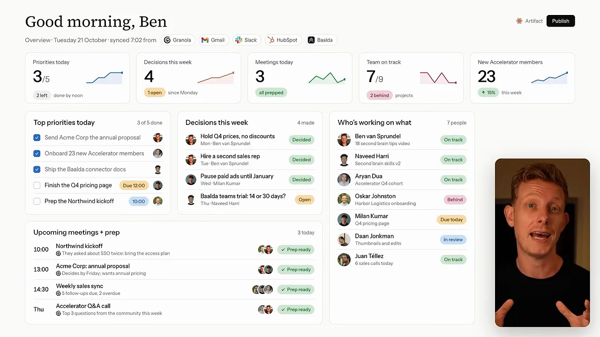
둘째는 영업처럼 한 부서를 위한 대시보드예요. 아래 'Sales, today' 화면에는 오늘 통화 6건(모두 준비됨), 열린 딜 26건, 기한이 된 후속 연락 5건, 제안 중 7건, 성사율 31%가 카드로 있어요. 발표자 회사 영업 담당자들은 매일 아침 이 화면에서 시작해서 CRM을 거의 열지 않는다고 해요.
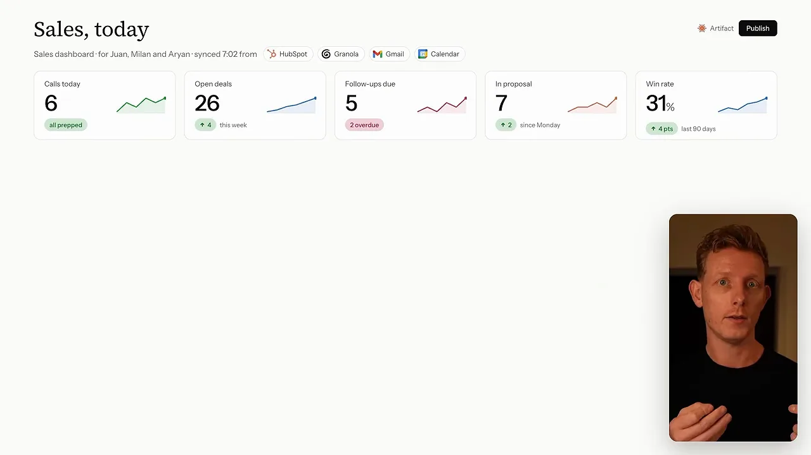
셋째는 지금 풀어야 할 문제 하나를 위한 대시보드예요. 질문을 던지면 Claude가 회의록, 프로젝트 파일, 결정 기록을 뒤져 어디서 막히는지 보여 줘요. 아래는 '왜 이번 분기 고객 온보딩이 길어졌을까?'에 대한 답이에요. 회의록 14개와 프로젝트 파일 9개로 만들었고, 온보딩 기간이 지난 분기 19일에서 이번 분기 31일로 늘었으며, 가장 큰 지연은 'Access setup'이라고 짚어요.
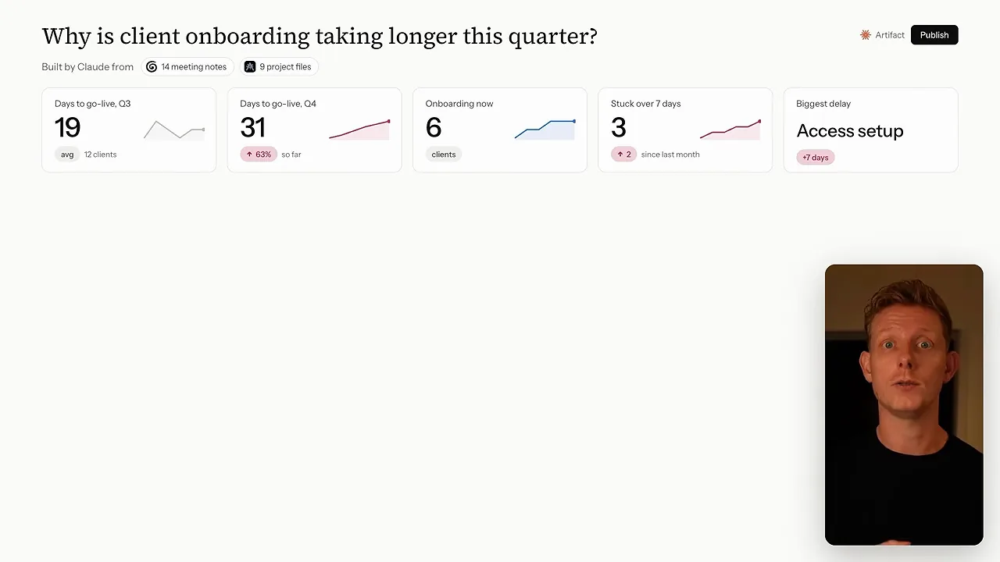
발표자는 화려한 그래프나 '에이전트 OS' 화면에 끌리지 말라고 해요. 그런 화면은 무엇이 무엇과 연결됐는지 보여 줄 뿐 쓸모는 적어요. 결정에 도움 되는 데이터만 보여 주라는 거예요. 만들기도 쉬워요. 'Build me a dashboard on top of my second brain that shows…' 뒤에 보고 싶은 걸 적고, 매일 아침 대시보드를 새로 고치는 예약 작업을 하나 더 걸면 돼요.
팁 12. 스킬이 세컨드 브레인의 파일을 읽게 해요
스킬은 보통 레퍼런스 파일이 있어야 잘 돌아가고, 여러 스킬이 같은 레퍼런스를 써요. 발표자의 전략, 브랜드 말투, 오퍼 문서는 수십 개 스킬이 함께 써요. 문제는 스킬 10개가 저마다 전략 문서 사본을 갖고 있으면, 전략이 바뀔 때 10곳을 고쳐야 한다는 거예요. 아무도 그렇게 하지 않으니 스킬은 서서히 낡은 정보로 일하게 돼요.
해결책은 레퍼런스 파일을 세컨드 브레인에 두고 스킬이 그 파일을 가리키게 하는 거예요. 아래 슬라이드 가운데 strategy.md에 v2 배지가 있고, 아래 스킬 10개 중 linkedin-post만 v2로 맞고 나머지는 모두 v1 · outdated예요. 사본을 따로 들고 있을 때 생기는 일이에요.
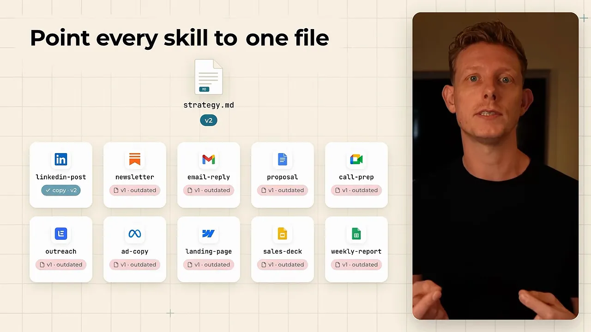
공유되거나 자주 바뀌는 파일이면 무엇이든 해당돼요. 링크드인·뉴스레터·메일 스킬이 함께 쓰는 브랜드 말투 가이드, 제안서·통화 준비·아웃리치 스킬이 쓰는 오퍼와 가격 문서가 예예요. 아래 스킬 목록을 보면 이름 옆에 Context/Business strategy.md, Context/Brand voice.md처럼 세컨드 브레인 안의 경로가 적혀 있어요.
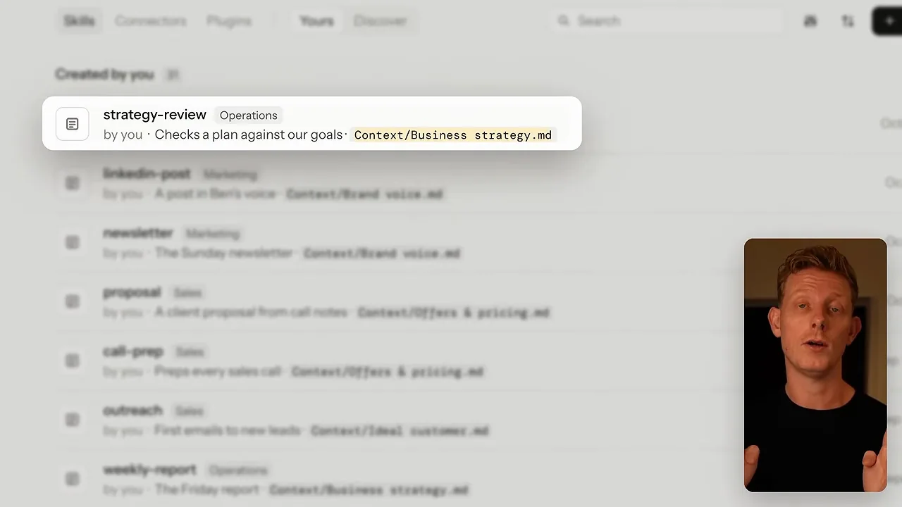
다만 스킬 자체를 세컨드 브레인에 넣는 건 권하지 않아요. 발표자 경험으로는 금방 지저분해지고 스킬을 고치기도 어려워진대요. 스킬은 Claude 계정에 두고 레퍼런스 파일만 세컨드 브레인에 둬요. 새 스킬을 만들거나 고칠 때 '레퍼런스 파일은 사본 말고 세컨드 브레인의 파일을 가리키게 해 줘'라고 부탁하면 돼요.
노트북이 꺼져도, 팀과 함께
팁 13. 노트북을 닫아도 업데이트되게 해요
팁 9의 매일 업데이트에는 약점이 있어요. 내 컴퓨터 파일을 다루는 예약 작업은 노트북이 열려 있고 Claude 앱이 켜져 있을 때만 돌아요. 아래 슬라이드처럼 월요일부터 금요일까지는 체크가 찍히지만, 노트북을 닫아 둔 토요일과 일요일은 빈 동그라미예요. 주말이나 출장 중에는 세컨드 브레인이 멈춰요.
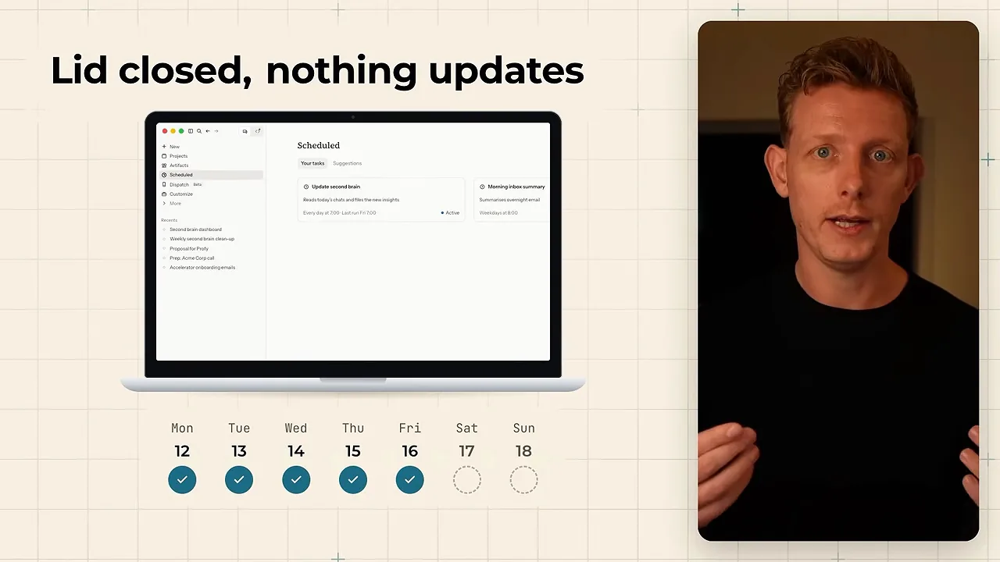
해결책은 같은 작업을 클라우드에서 돌리는 거예요. 영상은 Claude Code의 루틴을 써요. Anthropic 서버에서 도는 예약 작업이라 노트북이 열려 있든 말든 상관없어요. 팁 9의 프롬프트를 그대로 복사해 새 루틴에 붙이고 실행 시점만 고르면 돼요. 아래 Routines 화면에서 'New routine' 메뉴가 Local과 Cloud 두 갈래로 열려 있어요.
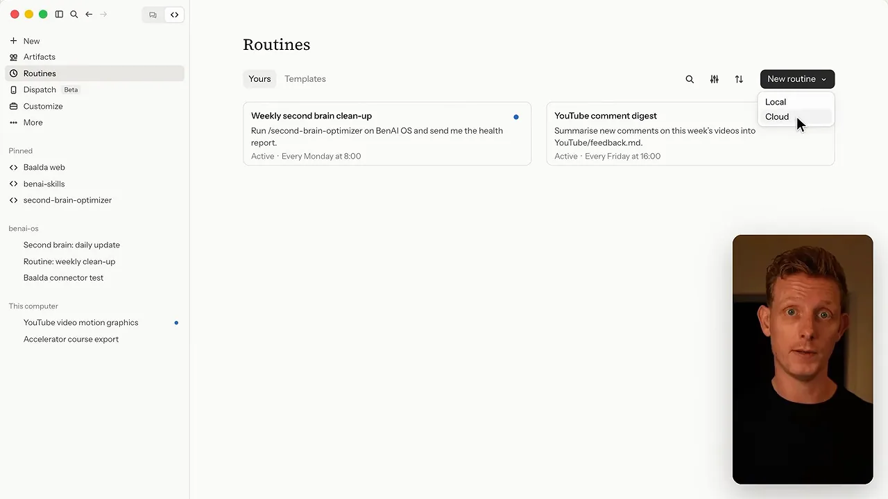
하지만 큰 변화가 하나 있어요. 루틴은 클라우드에서 돌아서 내 컴퓨터의 파일에 닿지 못해요. 그래서 세컨드 브레인도 클라우드에 있어야 하고, 루틴이 커넥터로 읽고 쓸 수 있어야 해요. 옵시디언으로도 할 수는 있지만 꽤 번거롭고 기술적인 세팅이 필요하다고 해요.
팁 14. 팀 전체에 하나를 동기화해요
여기서부터는 팀 단계예요. 발표자가 도와준 세팅 중 가장 많이 막힌 곳이 팀 공유예요. 아래 'What clients struggle with' 표가 세팅 통화 83건을 집계한 결과인데, 1위가 '팀 전체에 공유하기' 41건이에요. 그다음이 최신 유지 29건, 파일 정리 22건, 시작하기 17건, 무엇을 저장할지 12건이에요.
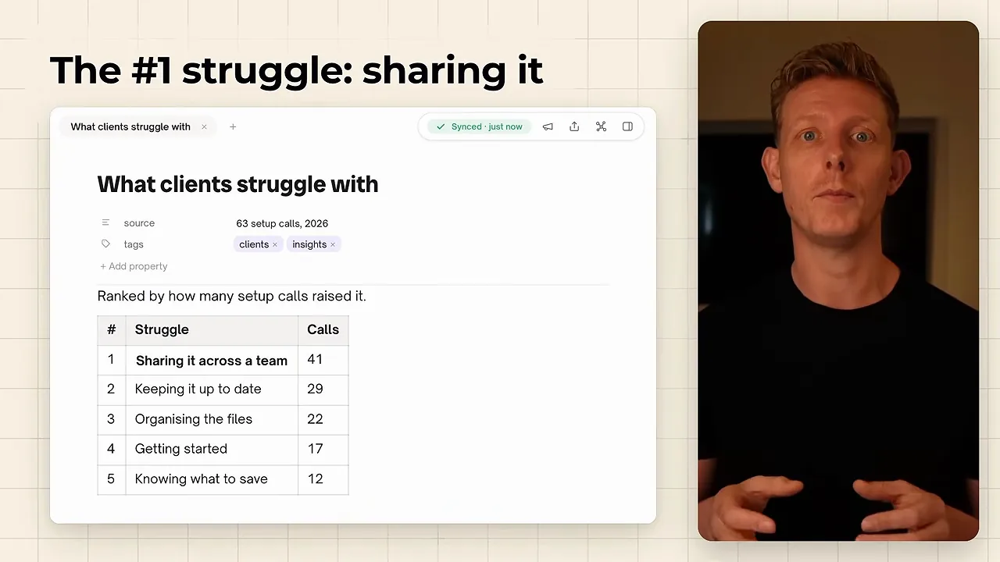
세컨드 브레인은 내 컴퓨터 폴더에 있으니, 쓰는 사람이 늘면 모두 같은 파일을 가져야 하고 누가 고치든 즉시 다른 사람 폴더에 반영돼야 해요. 옵시디언, 구글 드라이브, 노션으로 해 보면 아래 세 군데에서 막혀요. 왼쪽은 두 사람이 같은 파일을 저장해 strategy (conflicted copy).md가 생긴 모습, 가운데는 한 사람만 세팅할 줄 알아서 다른 사람은 못 쓰는 모습, 오른쪽은 접근 제어가 없어 모두가 모든 걸 보는 모습이에요.
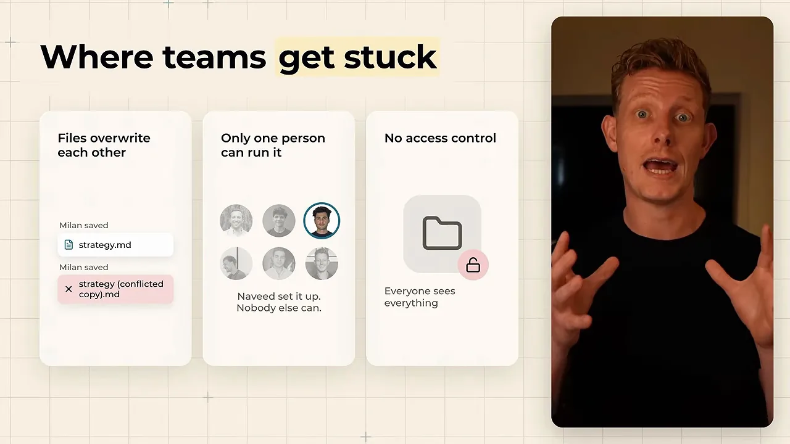
영상이 제시하는 방식은 세컨드 브레인의 동기화된 사본을 클라우드에 두는 거예요. 팀원은 두 가지로 붙어요. 하나는 사본을 자기 컴퓨터에 내려받아 로컬 폴더로 쓰는 방식이고, 누가 고치든 실시간으로 모두에게 동기화돼요. 다른 하나는 설치 없이 Claude 계정에 커넥터를 추가해 바로 읽는 방식이에요. 커넥터는 팁 2에서 봤듯 로컬 폴더보다 덜 효율적이라, 발표자는 가능하면 첫째 방식을 권해요.
팁 15. 단계적으로 넓히고 담당자 한 명을 둬요
흔한 실수는 첫날부터 회사 전체에 까는 거예요. 다들 제멋대로 파일을 넣다 보면 금방 쓸모없어져요. 아래 슬라이드가 권하는 순서예요. 가운데 나부터 시작해 2주 동안 매일 써 보고(오른쪽 체크 칸), 'Works for you'와 'Structure set'이 되면 바깥 고리로 한 명, 한 부서, 전사 순으로 넓혀요.
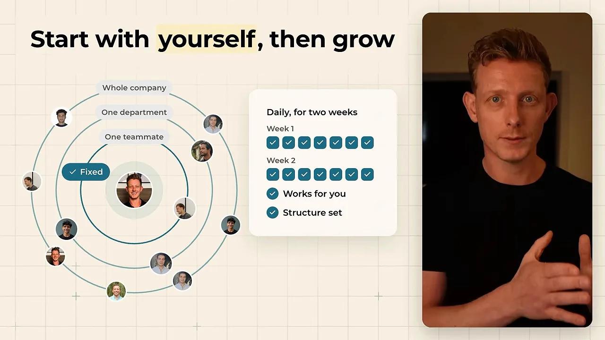
쓰는 사람이 늘면 담당자 한 명을 정해요. 세컨드 브레인은 매주 업데이트하고 청소해야 하는데, 모두의 책임이면 아무도 하지 않거든요. 담당자는 주간 청소를 돌리고, 폴더 구조와 agents.md 변경을 승인하고, 문제가 생기면 찾아갈 사람이 돼요. 그래야 열 명이 매일 뭔가를 넣어도 깔끔하게 유지돼요. 누가 무엇에 접근할지 관리하는 것도 이 사람 몫이에요.
권한, 팀 대시보드, 회사 우선 규칙
팁 16. 누가 보고 고칠지 정해요
팀 전체가 같은 세컨드 브레인을 쓰면 흔히 생기는 문제가 있어요. 경영진 메모와 재무부터 고객 파일과 인사 자료까지 모두가 보고 고칠 수 있게 되는 거예요. 이걸 제대로 푸는 세팅은 드물다고 해요. 필요한 건 폴더마다, 파일마다 누가 편집할 수 있는지, 보기만 하는지, 아예 접근하지 못하는지를 정하는 거예요. 팀 전체, 부서, 개인 단위로요.
아래는 팀원 한 명의 권한 설정 화면이에요. 가운데가 'Can edit', 'Can view', 'No access' 세 칸이고, 폴더를 끌어다 칸을 옮겨요. 지금 Context 폴더와 AGENTS 파일을 'Can view' 칸으로 옮기는 중이에요.
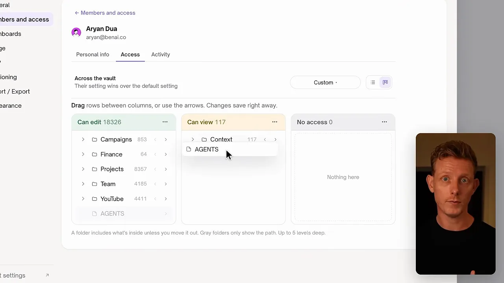
발표자 회사에서는 맥락 폴더와 agents.md가 모두에게 보기 전용이에요. 그래서 누구의 Claude도 회사 전략을 바꿀 수 없어요. 재무 폴더는 공동 창업자만 볼 수 있어요. 권한이 파일 자체에 걸려 있어서, 팀원이 어떤 AI 도구를 쓰든 그 사람이 못 보는 파일은 그 사람의 AI도 못 봐요.
팁 17. 팀 대시보드를 만들어요
경영자에게 세컨드 브레인은 회사가 지금 어떻게 돌아가는지를 실시간으로 보여 줘요. 영업 상황, 고객 반응, 늦어지는 프로젝트, 누가 무엇을 하는지요. 이걸 팀 대시보드로 모두에게 보여 주라고 권해요. 팀원마다 직접 만들 수는 없으니 세컨드 브레인 담당자가 맡는 게 좋아요. 부서별로 만들면 이렇게 나뉘어요.
| 부서 | 대시보드에서 보는 것 |
|---|---|
| 영업 | 영업 파이프라인, 미리 준비된 오늘 통화, 후속 연락이 필요한 딜 |
| 마케팅 | 성과 좋은 콘텐츠, 최신 고객 인사이트, 경쟁사 동향 |
| 운영 | 열린 프로젝트, 마감, 이번 주에 내린 결정 |
아래가 운영 대시보드 예시예요. 열린 프로젝트 17개(이번 달 2개 늘어남), 이번 주 마감 6개(금요일 3개), 지연 2개, 이번 주 결정 5개(1개 미결), 고객 온보딩 6건(3건 막힘)이 카드로 있어요. 오른쪽 위에 'Artifact'와 'Publish' 버튼이 보여요.
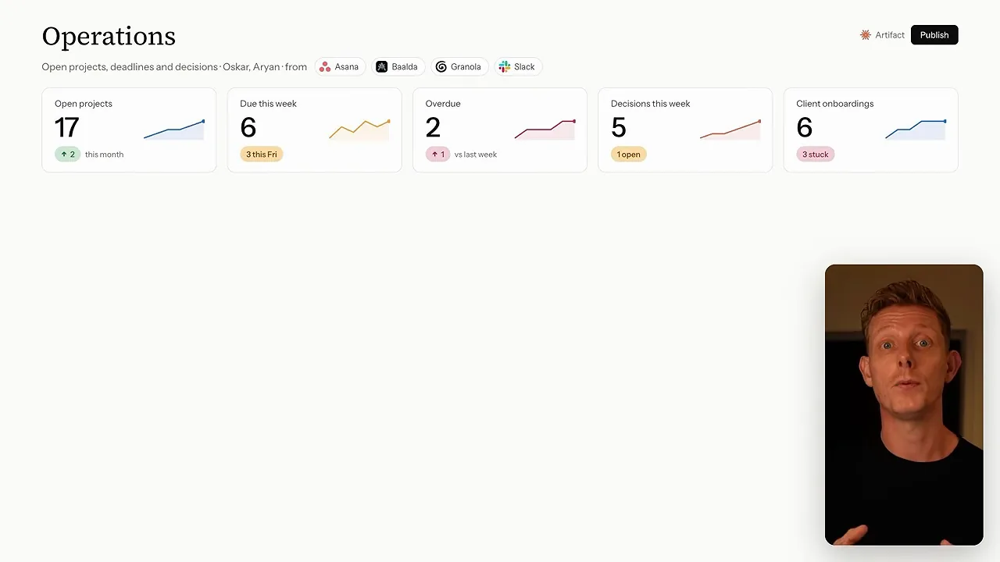
한 걸음 더 나가 팀원마다 개인 대시보드를 줄 수도 있고, 발표자 경험으로는 이게 아주 강력하대요. 공유는 Claude 아티팩트로 발행해 링크를 주거나, Vercel 같은 곳에 올려 고정 URL(Uniform Resource Locator)로 열면 돼요. 세컨드 브레인 세팅을 대행해 주는 사업이라면, 고객이 매일 실제로 보고 쓰는 부분이 대시보드라 좋은 판매 포인트가 된다고도 해요.
팁 18. agents.md에 '회사 우선' 규칙을 한 줄 넣어요
발표자가 사업에 가장 좋아하는 팁이에요. 지금 회사에서 AI 에이전트의 큰 문제는 사실보다 말하는 사람에게 동의하는 경향이에요. 아래 슬라이드 오른쪽에 공유 세컨드 브레인 속 회사 전략이 적혀 있어요. 프리미엄 가격, 4분기 마진 지키기, 10% 넘는 할인 금지예요. 그런데 AI는 요청한 사람 편을 들기 쉬워요.
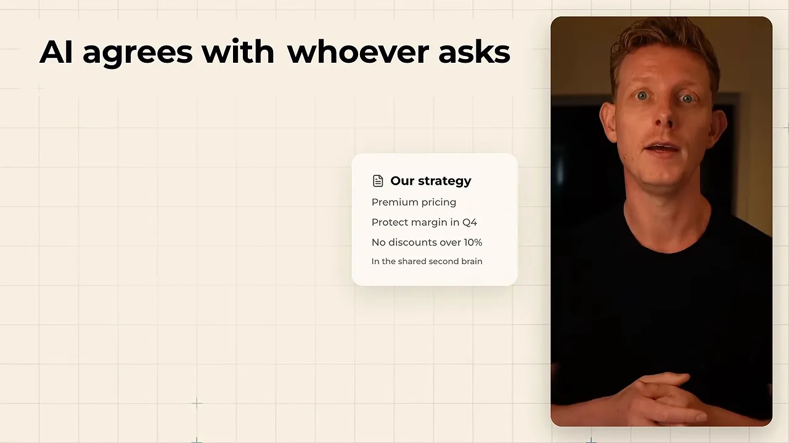
팀에서는 이게 실제 문제가 돼요. 영업 담당의 Claude는 영업 담당에게, 마케터의 Claude는 마케터에게 동의할 뿐, 그게 회사에 맞는지는 아무의 Claude도 확인하지 않아요. 발표자는 a16z의 'Institutional AI versus Individual AI'라는 글을 인용해요. 요즘 AI 도구는 대부분 사용자를 강화하지만, 정말 강화해야 할 건 진실, 여기서는 회사의 진실이라는 주장이에요. 그리고 하나의 agents.md를 공유하는 세컨드 브레인이 개인 AI를 조직 AI로 바꾸는 좋은 방법이라고 봐요. 아래 슬라이드처럼 영업, 마케팅, 운영, 재무 담당자 네 명의 Claude가 모두 가운데 같은 agents.md 파일을 먼저 읽어요.
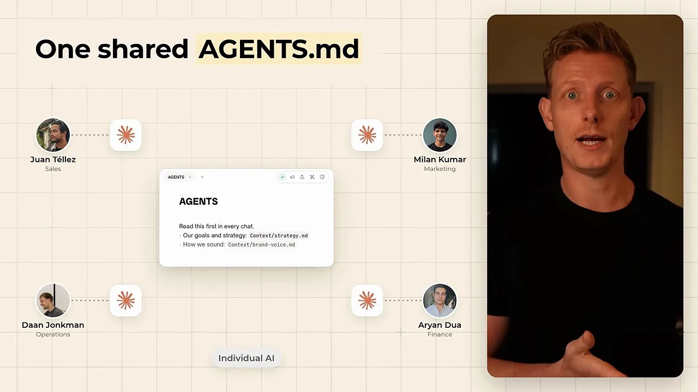
발표자가 권하는 건 agents.md에 이런 한 줄을 넣는 거예요. 아래 화면에서 '노스윈드를 이번 주에 잡으려면 가격을 반으로 깎자'는 요청을 받은 Claude가 먼저 이 규칙을 읽고, 이어서 4분기 우선순위가 담긴 Context/business-strategy.md를 열어요. 슬라이드의 '10% 넘는 할인 금지' 전략과 정면으로 부딪히는 요청이에요.
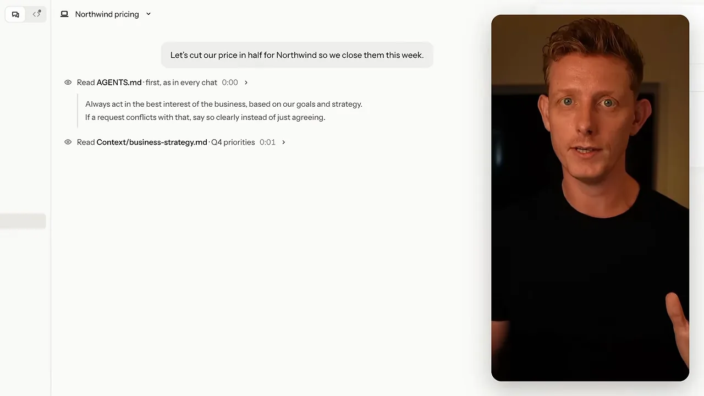
Always act in the best interest of the business based on our goals and our strategy. If a request or output conflicts with that, say so clearly instead of just agreeing.
항상 우리의 목표와 전략에 따라 회사에 가장 이로운 쪽으로 행동해요. 요청이나 결과가 그와 충돌하면 그냥 동의하지 말고 분명히 말해요.
— 영상 28:35
팀의 모든 에이전트가 매 대화 처음에 같은 파일을 읽으니, 이 한 줄이 팀 전체 AI로 퍼져요. 모든 에이전트가 조금 더 같은 기준, 곧 회사의 실제 목표와 전략에서 출발하게 돼요.